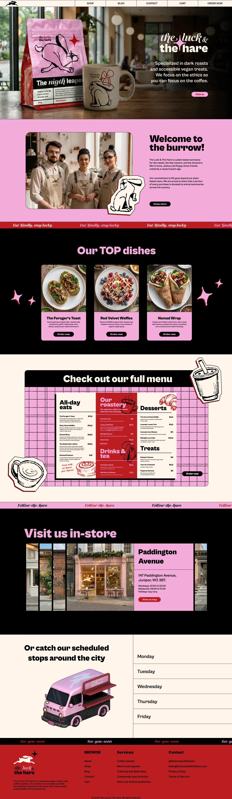

Madmeg
Madmeg
Sneak peek · work in progress
The website,
a first look.
A sketch of how the web page for The Luck & The Hare would feel: the burrow’s home, a shop for coffee, T-shirts, mugs and caps, and a blog for the community. Browse the tabs, from the home to each product page, and scroll inside the window.
theluckandthehare.com/

Scroll inside the window ↓